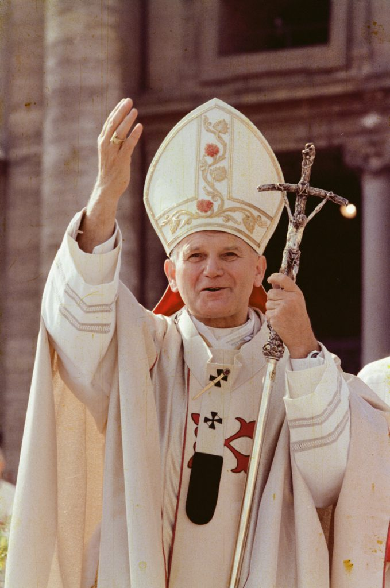

¿Qué día llega el papa a Uruguay?
El papa León XIV llegará a Uruguay el viernes 6 de noviembre de 2026.
Razones por las que llega el papa a Uruguay
-
Visita pastoral y de Estado
Al ser jefe de Estado del Vaticano, se trata de un viaje oficial que responde a una invitación conjunta del Gobierno uruguayo y de la Iglesia católica local.
-
Mensaje de paz e igualdad
El Gobierno uruguayo destacó que el pontífice busca transmitir un mensaje centrado en la paz y la búsqueda de la igualdad social.
-
Reencuentro histórico
Es la primera visita de un papa a Uruguay en casi 40 años, desde la última visita de san Juan Pablo II en 1988.
-
Itinerario previsto
El programa incluye actividades en Montevideo (encuentro con el presidente Yamandú Orsi, visita al barrio Casavalle y una vigilia en el Estadio Centenario), así como misas y celebraciones en Paysandú y Florida.
Noticia
Enlace a la noticia sobre la llegada del papaImagen

Biografía
-
¿Dónde nació?
El papa León XIV nació en Chicago, Estados Unidos.
-
¿Cuándo nació?
Nació el 14 de septiembre de 1955.
-
¿Cuál es su nombre de pila?
Robert Francis Prevost.
-
¿Qué estudios realizó?
Se licenció en Matemáticas por la Universidad de Villanova en 1977. Cursó estudios en la Catholic Theological Union de Chicago y obtuvo un doctorado en Derecho Canónico en Roma.
-
Ordenación
Ingresó en la Orden de San Agustín en 1977 y fue ordenado sacerdote el 19 de junio de 1982.
Trayectoria pastoral y misiones
-
Labor en Perú
Fue enviado como misionero a Perú en 1985, donde desempeñó una amplia labor pastoral y educativa en Chulucanas y Trujillo. Obtuvo la nacionalidad peruana por naturalización en 2015.
-
Cargos eclesiásticos
Fue prior general de la Orden de San Agustín entre 2001 y 2013.
Fue nombrado obispo de Chiclayo, Perú, en 2015 y ocupó ese cargo hasta 2023.
En 2023, el papa Francisco lo llamó a Roma como prefecto del Dicasterio para los Obispos y lo creó cardenal.